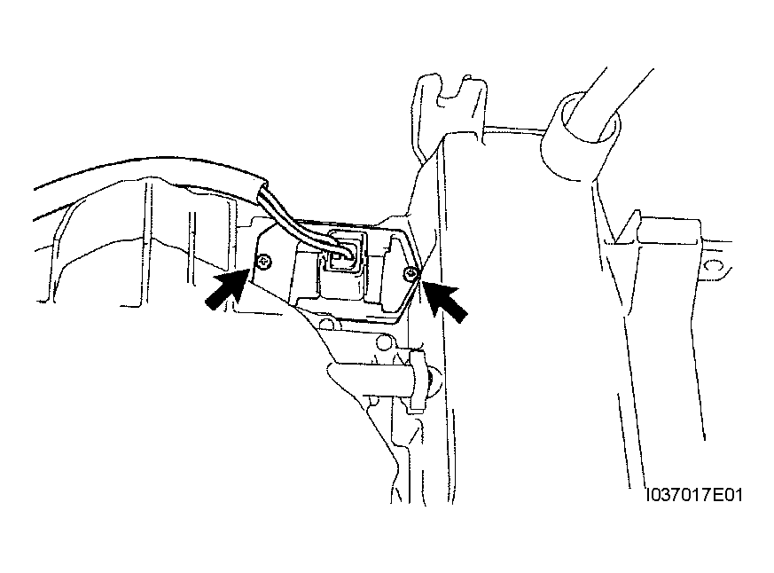

Blower Resistor: Removal
REMOVE ECM COVER (See
REMOVAL
)
REMOVE ECM (See
REMOVAL
)
REMOVE BLOWER RESISTOR
Disconnect the connector.
Remove the 2 screws and blower resistor.
Fig 1: Removing 2 Screws And Blower Resistor

Courtesy of © TOYOTA, LICENSE AGREEMENT TMS1002